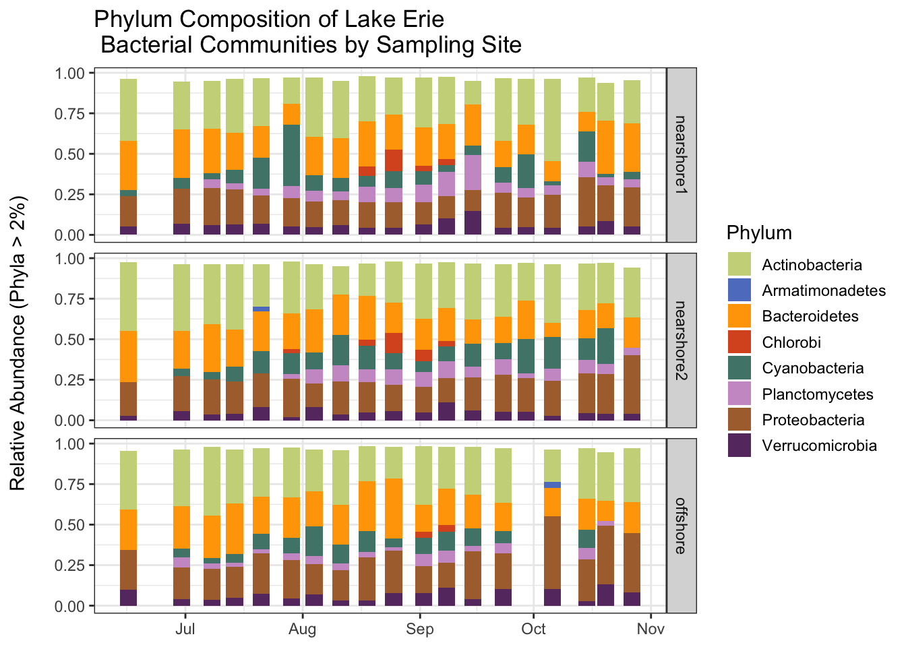
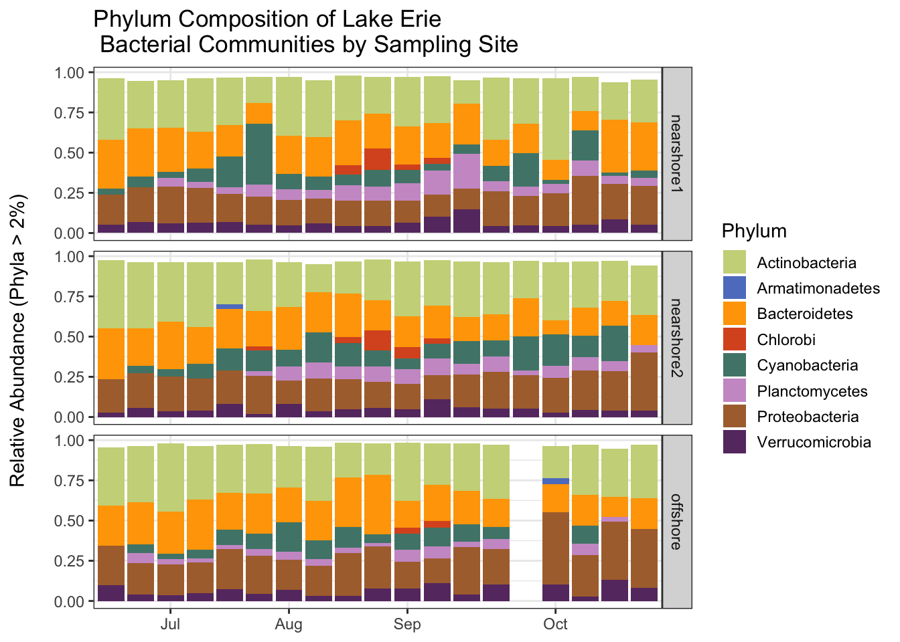

In this tutorial we will continue to work with the Lake Erie data set. This time, however, we will start with the clean data that we created last time. Our goal is to create a plot that shows how bacterial communities change over time at the three sampling sites.
The OTUs in the data are classified to the genus level. There are 806 genera in the taxonomy table even after the cleaning we did last time. In order to easily visualize the changes in the bacterial communities we will aggregate the data at the phylum level, so that we are working with fewer (but larger) taxonomic groups. After aggregating to the phylum level, we will compute the relative abundance of the phyla in each sample. To simplify the data even more, we will drop the phyla that make up a small fraction of the reads in a sample. Our analysis will focus on how the relative abundance of important phyla change over time. We will plot the relative abundance data using a stacked bar plot.
Your Quarto document
Create a new Quarto document for this tutorial, give it an informative name, and save it in the code subdirectory of your watershedErie directory. As you work through this tutorial, transcribe the code into your own document and run it. Make sure you also write about what you are doing so that you can understand your work when you read it later.
Don’t forget the setup information we need to put at the top of all of our Quarto documents.
Setup and reading in the clean data
Let’s start by cleaning up our work space and loading the required packages.
rm(list =ls())gc()
used (Mb) gc trigger (Mb) limit (Mb) max used (Mb)
Ncells 579878 31.0 1322072 70.7 NA 669442 35.8
Vcells 1069679 8.2 8388608 64.0 102400 1851737 14.2
library(tidyverse)
── Attaching core tidyverse packages ──────────────────────── tidyverse 2.0.0 ──
✔ dplyr 1.1.3 ✔ readr 2.1.4
✔ forcats 1.0.0 ✔ stringr 1.5.0
✔ ggplot2 3.4.3 ✔ tibble 3.2.1
✔ lubridate 1.9.2 ✔ tidyr 1.3.0
✔ purrr 1.0.2
── Conflicts ────────────────────────────────────────── tidyverse_conflicts() ──
✖ dplyr::filter() masks stats::filter()
✖ dplyr::lag() masks stats::lag()
ℹ Use the conflicted package (<http://conflicted.r-lib.org/>) to force all conflicts to become errors
library(lubridate)
Next we load the data that we cleaned in the last tutorial. If you saved the files in the correct place (the clean_data folder) and used the same names as I did, then the following code should work without modification.
Let’s remind ourselves how the erie (shared) data are structured. There is one row per sample. All but the first three columns list the abundance (number of reads) of seqeuences associated with the OTUs. Since there are 7522 OTUs in the data, there are a lot of columns (7525).
It is sometimes helpful to change the shape of a data set, especially preceding aggregation or some other summary computation. It is important to note that changing the shape of a data set does not change the information in the data set. Typically, we will change the shape of a data set by transforming it so that it has more rows and fewer columns (lengthening the data) or so that it has more columns and fewer rows (widening the data).
We will make a long version of the erie data so that we can more more easily aggregate at the phylum level. This will also make the data more suitable for plotting later (ggplot works best with long data formats). To lengthen or widen a data set we use pivot commands. Let’s pivot!
Our goal is to transform the data so that there is a row for each OTU in each sample. We already have a SampleID column. We need to add an OTU column so we know which OTU a row corresponds with. We also need to add a column to keep track of the abundance (number of reads) for each OTU in each sample. Before we do anything we drop the extraneous label and numOtus columns.
The following command tells R that we want to lengthen our data (pivot_longer), taking all of the columns that start with the string “Otu” and putting their names in a new column called OTU and their values in a new column called Abundance.
Note that we now have a row for each OTU for different sample. We now have a lot of rows (56 samples * 7522 OTUS = 411232) and only a few columns.
Simplifying the taxonomy table
Let’s remind ourselves of the structure of the taxonomy table. There is a row for each OTU. The last 7 columns give the taxonomic classification of the OTUs at descending taxonomic levels.
Since our goal is to eventually aggregate at the phylum level, let’s create a simplified taxonomy table that just has OTU, and Phylum information (remember we have already filtered out everyhing but bacteria). This is easy to do with the select function, whose job is to select columns to retain in the data.
Labeling the phyla in the erie sample data by joining the data sets
Before we aggregate the sample data at the phylum level, we have to attach approriate phylum labels to the OTUs. In essence, we want to join the lengthened erie data, which has information about OTUs, with the simplified erie_tax_phylum taxonomoy data, which matches OTUs with phylum labels. We can use a join command to accomplish this.
This command takes the data set on the left (erie) and joins it with the data set on the right (erie_tax_phylum) in a way that retains the rows of the data set on the left (hence, left_join). The join command looks for columns that the two data sets have in common (in this case just OTU) and joins by those columns. This means that for each row in the erie data, it determines the OTU for that row, finds that OTU in the erie_tax_phylum data, and adds the data associated with that OTU (Kingdom and Phylum) to the erie data. As a result, Kingdom and Phylum columns are added to the erie data.
Now we aggregate the sample data. Our goal is to have one row per phylum (rather than OTU) for each sample and a column that lists the abundance (total number of reads) for each phylum in each sample.
We start by grouping the data by sampleID and Phylum. This does not change the shape of the data set or the information contained in it, it just adds a group structure. Each group will contain all of the rows associated with a single phylum within a single sample. We add this structure so that we can aggregate within each group. Note that the structure is indicated in the print out.
We remove the ungrouped data from the workspace using the rm command and free up some memory using the gc command.
used (Mb) gc trigger (Mb) limit (Mb) max used (Mb)
Ncells 1065468 57.0 2012385 107.5 NA 2012385 107.5
Vcells 3628087 27.7 8388608 64.0 102400 8082487 61.7
Now we aggregate the data. The summarize function creates a specified summary of each group in a grouped data set. Here, we want to sum the number of reads per OTU within each phylum for each sample. So, we create an Abundance column that holds the sum of the previous Abundance column within each group. Note that the resulting data set has fewer rows, and that it no longer has OTU information (since we have aggregated at the phylum level). Also note that the data are still grouped by SampleID. We will exploit this grouping later.
In general, following a summarize operation, the resulting data frame can still be grouped if the original data frame is grouped on more than one variable. Only the grouping by the last grouping variable is removed. Since our data are grouped by SampleID and Phylum, the result is still grouped by SampleID.
Computing relative abundances
Now compute the relative abundances of each phylum in each sample. Instead of listing the number of reads for each phylum within each sample, we want to know the proportion of the total reads in the sample that are made up by each phylum. Thus, we need to divide the Abundance of each phylum in a sample by the sum of the Abundance for each sample (across all phyla in the sample).
We can use the mutate command to compute the relative abundance in a single opeation. We take advantage of the fact that the data are already grouped by SampleID. Whenever a mutate command is applied to a grouped data set, any summary operations (sum, mean, median, sd, etc.) is applied at the group level rather than across the whole data set. Thus, the sum computed in the following mutate command will be the group sum (the total number of reads for each sample).
Some of the phyla make up only a small proportion of the sample. We will simplify the data set by removing any phyla that make up 2% or less of each sample. Before we do that let’s take a look at how many phyla are present in the entire data set before filtering. There are currently 43 phyla.
erie_phylum %>% ungroup %>%count(Phylum) # ungroup so we are not counting phyla within each Sample
Have any phyla been removed from the data altogether? Let’s count the remaining phyla. Only 8 remain! The table shows how many samples they appear in (there are 56 samples).
Let’s export the aggregated and filtered data so that we can use it later without repeating the computations we have done. We’ll save an ungrouped version of the data so that we don’t have to remember about the groups structure later.
Now we can join the the sample data with the metadata, which has information we will want to incorporate in our plot. In particular, we would like to see how relative abundance changes over time at each sample site. Thus, we need to know when each sample was collected and which site it was collected at. This information is in the metadata. We use a join command like we did earlier. We want to add information from the metadata to the erie_phylum data, so we perform the join in a way that will preserve the rows of the erie_phylum data. The data will be joined by the columns they have in common (in this case, just SampleID).
Before we do any plotting, we will specify the colors that we will use to represent the phyla. We will use the colors from Michelle Berry’s Phyloseq tutorial. There are 16 colors, but we will only use 8 (one color per phylum).
We will construct two versions of the plot. In both cases we will plot relative abundance on the y axis and date on the x axis. In the first case we will plot the dates in such a way that they occur at the correct relative position on the x axis. This shows the irregularity in the sample collection–larger white spaces between bars reflect longer intervals between samples. In the second case, we will have the same amount of white space between each bar, allowing us to focus more on the varition in relative abundance.
The structure of the ggplot command is familiar. We use Phylum to determine the fill color within each bar. geom_bar adds the bars to the plot. The facet_grid command tells R to break the plot into a grid of vertically arranged subplots with one subplot per Station. The rest of the code determines how the plot will look, including specifying that we want to use colors from the phylum_colors vector.
ggplot(erie_joined, aes(x = Date, y = Rel_Abundance, fill = Phylum)) +facet_grid(Station~.) +geom_bar(stat ="identity") +scale_fill_manual(values = phylum_colors) +theme_bw() +# Remove x axis titletheme(axis.title.x =element_blank()) +guides(fill =guide_legend(reverse =FALSE, keywidth =1, keyheight =1)) +ylab("Relative Abundance (Phyla > 2%) \n") +ggtitle("Phylum Composition of Lake Erie \n Bacterial Communities by Sampling Site")

For the second version, we treat date as a character (instead of a date) so that there is not irregular spacing between bars that results from irregular sampling intervals.
ggplot(erie_joined, aes(x =format(Date, "%m/%d"), y = Rel_Abundance, fill = Phylum)) +facet_grid(Station~.) +geom_bar(stat ="identity") +scale_fill_manual(values = phylum_colors) +scale_x_discrete(breaks =c("07/08", "08/04", "09/02", "10/06"),labels =c("Jul", "Aug", "Sep", "Oct"),drop =FALSE ) +theme_bw() +# Remove x axis titletheme(axis.title.x =element_blank()) +guides(fill =guide_legend(reverse =FALSE, keywidth =1, keyheight =1)) +ylab("Relative Abundance (Phyla > 2%) \n") +ggtitle("Phylum Composition of Lake Erie \n Bacterial Communities by Sampling Site")

Saving the plot
Let’s save the second version of the plot so that we can easily refer to it later. We will save it in the outputs subdirectory of the watershedErie directory, since it is an ouput. We will save the plot as a pdf file using the ggsave command. After you save the plot open it up and see what it looks like.